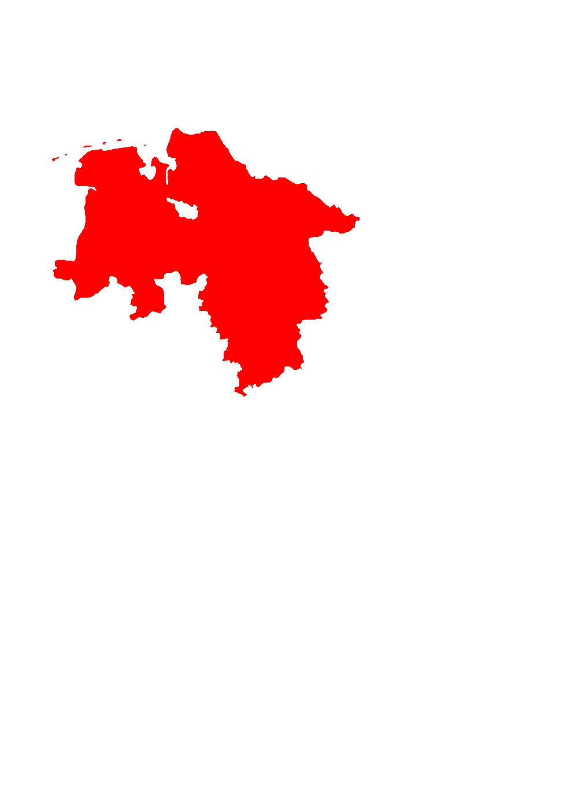
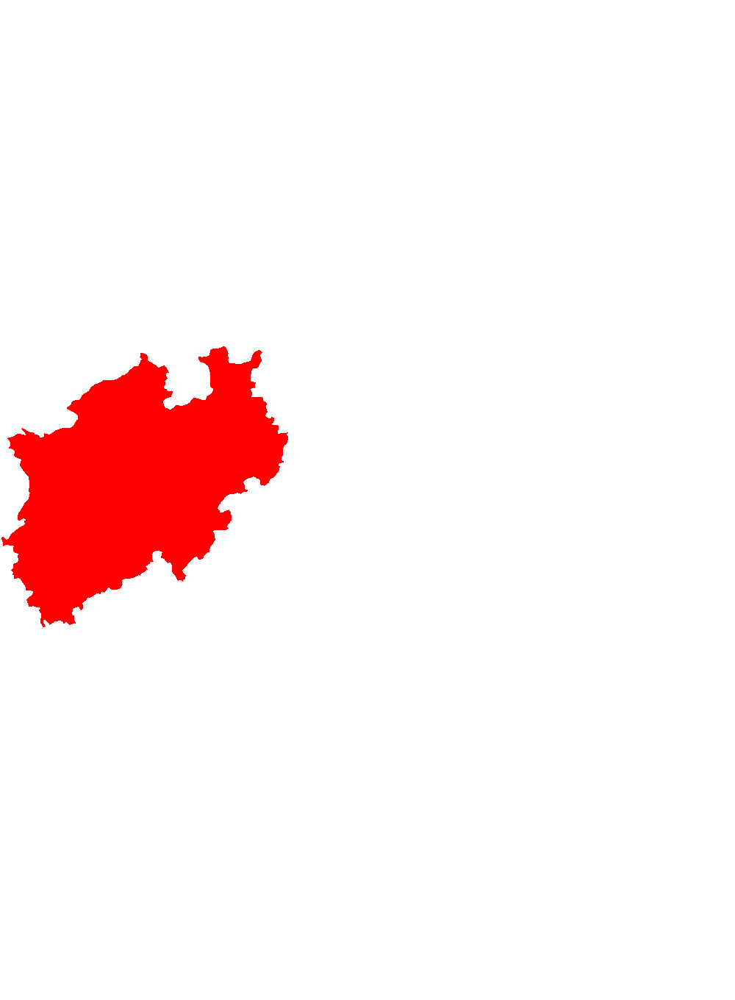
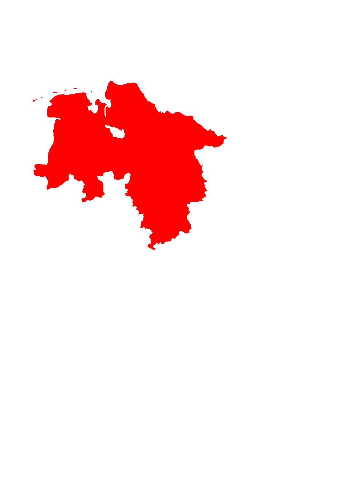
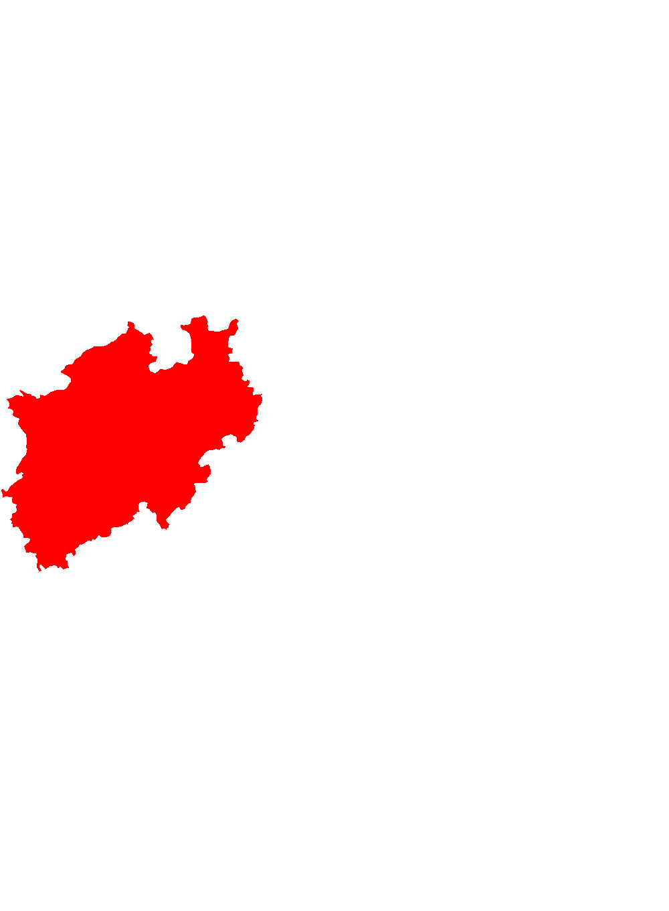

Beschreibung
Diese Seite bietet Ihnen einen Überblick über die Todesfälle in den verschiedenen Bundesländer, bezogen auf die Daten der letzten 7 Tage. In die Statistik zählen alle Todesfälle, welche in bestätigtem zusammenhang mit einer Corona-Infektion stehen. Hierbei gilt für die Werte wieder, dass diese auf das gesamte Bundesland, ohne Berücksichtigung der Einwohnerzahl des jeweiligen, bezogen sind.
Karte

 





Todesfälle:
Schleswig-Hollstein:
Hamburg:
Niedersachsen:
Bremen:
Nordrhein-Westfalen:
Hessen:
Rheinlan-Pfalz:
Baden-Württemberg:
Bayern:
Saarland:
Berlin:
Brandenburg:
Mecklenburg-Vorpommern:
Sachsen:
Sachsen-Anhalt:
Thüringen:
Stand der Daten: